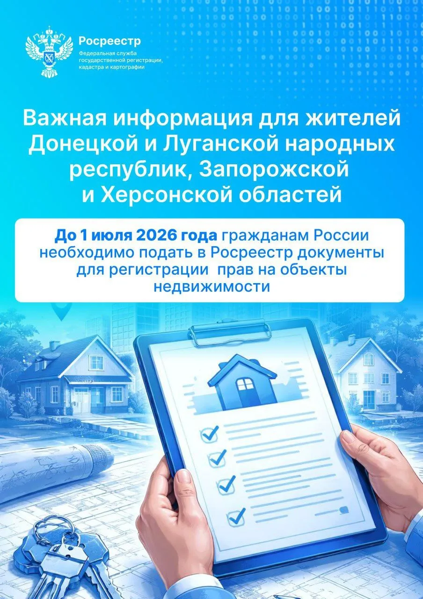
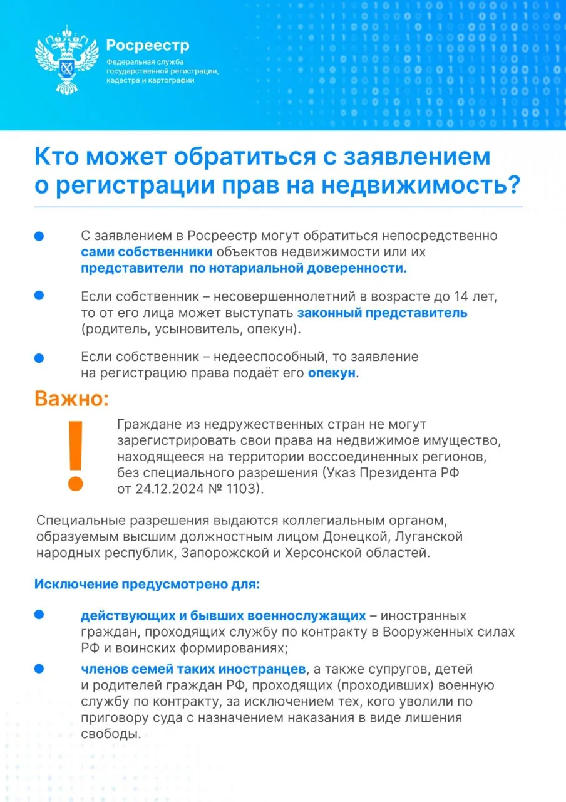

Регистрация недвижимости в ЛНР в 2026 году: что нужно знать собственникам жилья, земли и домов
Дата:

В 2026 году для жителей ЛНР один из самых важных имущественных вопросов - регистрация недвижимости по российским правилам. Речь идет о квартирах, частных домах, земельных участках, гаражах, нежилых помещениях и другой недвижимости, на которую у людей остались документы ЛНР, Украины, БТИ, нотариальные договоры, свидетельства о наследстве, решения судов или старые технические паспорта.
Главное, что нужно понять: наличие старых документов само по себе еще не означает, что право уже внесено в российскую систему. Для полноценного подтверждения собственности по российским правилам право должно быть зарегистрировано в Едином государственном реестре недвижимости - ЕГРН.
Именно запись в ЕГРН является основным подтверждением права собственности в российской системе. Без нее могут возникнуть сложности при продаже, дарении, наследовании, оформлении ипотеки, подключении отдельных услуг, получении компенсаций, судебной защите и подтверждении права перед органами власти.
До какого срока нужно подать документы
По действующим переходным нормам документы на недвижимость в ЛНР, выданные до принятия республики в состав России, должны быть представлены для регистрации прав в ЕГРН до 1 июля 2026 года.
Это основной действующий срок, на который нужно ориентироваться собственникам. В публичном поле обсуждается продление срока до 1 января 2028 года, однако до окончательного вступления таких изменений в силу безопаснее исходить из даты 1 июля 2026 года.
При этом есть отдельный важный срок: региональные комиссии, которые проверяют спорные или сомнительные документы, включая украинские, действуют до 1 января 2028 года. Это не то же самое, что общий срок подачи документов. Поэтому важно не путать два режима: регистрация прав имеет свой действующий дедлайн, а проверка документов комиссиями - свой.
Признаются ли украинские документы
Украинские документы могут быть основанием для регистрации права в России, но не автоматически. Это значит, что договор, свидетельство, наследственный документ, решение суда или иной акт украинского происхождения могут принять, если они соответствуют требованиям переходного законодательства.
Обычно проверяется, когда был выдан документ, кто его выдал, имел ли этот орган или нотариус полномочия, нет ли признаков подделки, совпадает ли объект с тем, который заявитель хочет зарегистрировать, и подтверждает ли документ именно право собственности или другое вещное право.
Если документ выдан до принятия ЛНР в состав России и оформлен уполномоченным органом или нотариусом, шанс его признания выше. Если документ выдан украинским органом уже после принятия ЛНР в состав России, ситуация сложнее. В таких случаях может потребоваться отдельная правовая оценка, обращение в комиссию или суд.
Зачем нужна региональная комиссия

Для новых регионов создан специальный механизм проверки документов. Региональная комиссия рассматривает документы, по которым есть вопросы, и решает, можно ли использовать их как основание для регистрации права в ЕГРН.
Комиссия не оформляет право собственности вместо Росреестра. Ее задача - проверить сам документ. Она оценивает полномочия органа или нотариуса на дату выдачи, признаки подложности, соответствие сведений о праве и объекте данным органов власти и местного самоуправления.
Если комиссия приходит к выводу, что документ соответствует требованиям, он может использоваться для дальнейшей регистрации. Если комиссия признает документ несоответствующим, зарегистрировать право на его основании нельзя. Такое решение можно обжаловать в суде.
Что делать собственнику
Первое действие - выяснить, есть ли сведения об объекте и праве в ЕГРН. Если право уже зарегистрировано, собственнику обычно достаточно получить выписку из ЕГРН и проверить, правильно ли указаны адрес, площадь, вид объекта и правообладатель.
Если сведений нет, нужно определить, что именно требуется: только регистрация права, только кадастровый учет или одновременный кадастровый учет и регистрация права.
Кадастровый учет нужен, когда объект надо внести в систему как недвижимость: указать его характеристики, площадь, адрес, границы, вид объекта. Регистрация права нужна, чтобы государство признало конкретного собственника. В сложных случаях эти действия проводят одновременно.
Затем нужно собрать документы, которые подтверждают право. Это может быть договор купли-продажи, дарения, мены, свидетельство о праве на наследство, решение суда, акт органа власти, свидетельство старого образца или другой документ, из которого понятно, почему объект принадлежит заявителю.
Если речь идет о доме или земельном участке, может понадобиться технический или межевой план. Если объект не стоит на кадастровом учете, без кадастровых работ часто не обойтись.
Какие документы обычно нужны
Для подачи заявления обычно готовят паспорт заявителя, правоустанавливающий документ, технические документы на объект, документы БТИ, кадастровые сведения, документы на землю, если оформляется дом, а также доверенность, если документы подает представитель.
При наследстве дополнительно понадобятся документы о смерти наследодателя, документы о родстве, свидетельство о праве на наследство или иные нотариальные документы.
Важно понимать: технический паспорт, справка БТИ или старый план объекта обычно помогают идентифицировать недвижимость, но сами по себе не всегда подтверждают право собственности. Они описывают объект, но не заменяют договор, свидетельство, решение суда или другой правоустанавливающий документ.
Куда подавать документы
Документы подаются через МФЦ или другую уполномоченную площадку приема. Для объектов недвижимости в ЛНР применяется экстерриториальный порядок. Это значит, что заявление можно подать не только по месту нахождения объекта, но и через доступные офисы приема в других регионах России.
После подачи документов заявителю должны выдать подтверждение приема. Его нужно сохранить. Это доказательство того, что документы были поданы в установленный срок.
Дальше нужно отслеживать статус заявления. Если все в порядке, итогом станет регистрация права и получение выписки из ЕГРН.
Что делать, если пришла приостановка
Приостановка - это не окончательный отказ. Это означает, что регистратор обнаружил проблему и дает время ее устранить.
Причины могут быть разными: не хватает документа, есть расхождение в площади, адресе или фамилии, объект не стоит на кадастровом учете, непонятна цепочка перехода права, есть сомнения в полномочиях органа, выдавшего документ, или требуется проверка через комиссию.
В такой ситуации нельзя просто ждать. Нужно внимательно прочитать причину приостановки, понять, какой документ или действие требуется, и устранить замечания. Иногда достаточно донести документ. Иногда нужно обратиться к кадастровому инженеру. Иногда потребуется архивный запрос, нотариус, комиссия или суд.
Что делать при отказе
Отказ означает, что регистрация не проведена. Но это не всегда конец ситуации. Нужно понять основание отказа.
Если отказ связан с ошибкой в документах или неполным пакетом, можно исправить проблему и подать заявление повторно. Если отказ связан с правовым спором, непризнанием документа или невозможностью подтвердить право, может потребоваться судебное обжалование или установление права через суд.
Особенно внимательно нужно относиться к отказам по украинским документам. Если документ не признан или комиссия вынесла отрицательное решение, дальнейший путь чаще всего связан с обжалованием или поиском другого основания для регистрации.
Что такое "бесхозяйное" жилье и почему это важно
Для ЛНР действует специальный режим по жилым помещениям с признаками бесхозяйного имущества. Это одна из самых чувствительных тем для собственников, которые долго не оформляют недвижимость или не могут подтвердить право документами.
Бесхозяйным может считаться жилье, по которому нет понятных сведений о собственнике, документы не позволяют установить правообладателя, объект фактически не обслуживается, не используется или находится в ситуации, когда публичные органы считают его не имеющим установленного владельца.
По специальным правилам такое жилье может перейти в собственность ЛНР или муниципального образования. Важный момент: отсутствие сведений о собственнике или невозможность установить собственника по имеющимся документам не мешает регистрации публичной собственности.
Именно поэтому собственнику нельзя ограничиваться фразой "у меня где-то есть старые документы". Нужно сделать так, чтобы право было видно в российской системе - в ЕГРН.
Как защитить жилье от риска признания бесхозяйным
Самый надежный способ - зарегистрировать право в ЕГРН. Если документы есть, их нужно подать. Если документы утрачены, их нужно восстанавливать через архивы, нотариусов, органы власти или суд. Если документы украинские или спорные, нужно быть готовым к проверке.
Если собственник узнал, что по его жилью началась процедура признания бесхозяйным, реагировать нужно немедленно. Нужно предъявить документы, обратиться в орган, который ведет процедуру, подать заявление, зафиксировать свою позицию письменно и при необходимости идти в суд.
Чем дольше человек молчит и не оформляет право, тем выше риск, что объект будет воспринят как проблемный. Особенно это касается жилья, где никто не проживает, нет оплаты коммунальных услуг, нет связи с собственником или документы находятся в плохом состоянии.
Почему нельзя откладывать
Регистрация недвижимости в ЛНР идет массово. За последние годы в регионе проведены миллионы учетно-регистрационных действий. Это означает высокую нагрузку на систему, очереди, проверки, запросы и повышенное внимание к сложным документам.
Если объект простой, право может быть зарегистрировано быстрее. Но если есть украинские документы, наследство, старые адреса, расхождения в площади, отсутствие кадастрового учета, утраченные бумаги или спор между родственниками, процесс может занять значительно больше времени.
Поэтому правильная стратегия - не ждать последнего месяца. Нужно заранее проверить документы, понять слабые места, подать заявление и оставить себе время на исправление ошибок.
Главное для собственника
Если у вас есть недвижимость в ЛНР, старые документы нужно привести в соответствие с российской системой учета. Украинские документы могут быть признаны, но при необходимости проходят проверку. Технические документы помогают описать объект, но не всегда подтверждают право. Приостановку нельзя игнорировать. Отказ можно оспаривать или устранять его причины.
Основной действующий срок подачи документов - до 1 июля 2026 года. Обсуждаемое продление до 1 января 2028 года важно отслеживать, но пока безопаснее действовать по действующим правилам.
Главный практический вывод простой: собственнику нужно добиться записи в ЕГРН.
Это основной способ защитить квартиру, дом, землю или другое имущество от споров, отказов и риска признания жилья "бесхозяйным".